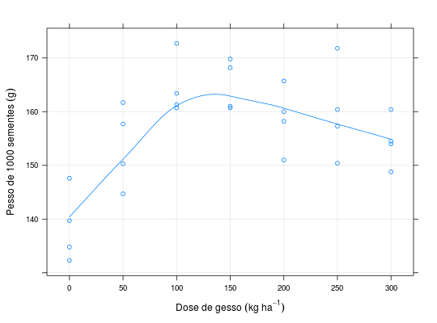

Estudo sobre o efeito do gesso no peso de grãos de feijão (Phaseolus vulgaris L.) feito por Ragazzi (1979). O experimento foi instalado em delineamento inteiramente casualizado e foram estudados 7 níveis de gesso, de 0 a 300, igualmente espaçados em 50 kg ha\(^{-1}\).
Um data.frame com 28 observações e 3 variáveis, em que
gessoreptpesoBANZATTO; KRONKA (2013), Quadro 7.2.1, pág. 170.
Ragazzi, D. (1979). Efeito de doses de gesso na cultura do feijoeiro (Phaseolus vulgaris L.). Trabalho de Conclusão de Curso (Graduação em Agronomia). Faculdade de Ciências Agrárias e Veterinárias, Universidade Estadual Paulista, Jaboticabal.
library(lattice) data(BanzattoQd7.2.1)#> Warning: data set ‘BanzattoQd7.2.1’ not foundstr(BanzattoQd7.2.1)#> 'data.frame': 28 obs. of 3 variables: #> $ gesso: num 0 0 0 0 50 50 50 50 100 100 ... #> $ rept : num 1 2 3 4 1 2 3 4 1 2 ... #> $ peso : num 135 140 148 132 162 ...xyplot(peso ~ gesso, data = BanzattoQd7.2.1, type = c("p", "smooth", "g"), xlab = expression("Dose de gesso"~(kg~ha^{-1})), ylab = expression("Pesso de 1000 sementes"~(g)))